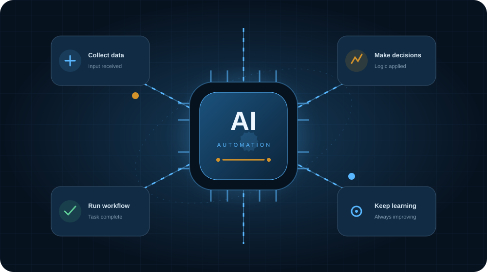

Web Development
Fast, scalable websites with clean implementation and thoughtful interactions.
Explore Web DevelopmentCapabilities
Choose a focused capability or bring us the whole brief. We shape the right mix around your audience, goals, and stage of growth.
Fast, scalable websites with clean implementation and thoughtful interactions.
Explore Web Development

Connected campaigns that bring creative thinking and performance together.
Explore Digital Marketing
Practical workflows that reduce repetition and connect everyday tools.
Explore AI Automation
Research-led journeys and interfaces that make complex products feel clear.
Explore UI UX Design
Ways to work together
A defined scope for a website, identity, product experience, automation, or campaign with clear deliverables.
Continuous design, development, and growth support for teams that need consistent senior attention.
Extra strategic or creative capacity that works alongside your existing team and established roadmap.
Our process
We align on goals, audience, scope, success measures, and the decisions that matter most.
Research becomes a focused brief, practical roadmap, and shared creative direction.
We work in visible stages, sharing progress early and keeping feedback connected to the goal.
Quality checks, responsive testing, handover, and a clear plan for what comes after release.
Tools and technology
Technology should support the experience, not dictate it.
We choose practical, maintainable tools around your content, team, integrations, and long-term needs.
Why ALIFY
Brand, experience, and technical decisions stay aligned from beginning to end.
Regular check-ins and tangible work keep everyone close to the decisions.
A flexible foundation for future content, campaigns, products, and ideas.
Service questions
Yes. Many projects bring strategy, design, development, and growth together. We define one joined-up scope rather than separate disconnected workstreams.
No matching questions found. Try another search or topic.